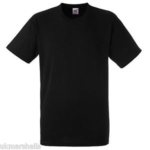
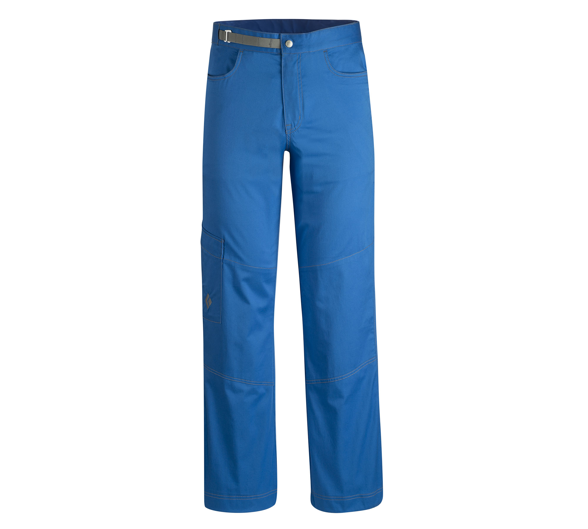

<!--
  Generated template for the CustomDesignPage page.

  See http://ionicframework.com/docs/components/#navigation for more info on
  Ionic pages and navigation.
-->
<ion-header>

  <ion-navbar>
      <button ion-button menuToggle>
          <ion-icon name="menu"></ion-icon>
      </button>
    <ion-title>custom-design</ion-title>
  </ion-navbar>

</ion-header>


<ion-content padding class="main">
  

  <div class="container">
    <div class="shirts">
               
    </div>
    <div class="pants">
      
    </div>
  </div>
  <ion-fab left bottom>
    <button ion-fab color="light"><ion-icon name="arrow-dropright"></ion-icon></button>
    <ion-fab-list side="right">
      <button ion-fab><ion-icon name="logo-facebook"></ion-icon></button>
      <button ion-fab><ion-icon name="logo-twitter"></ion-icon></button>
      <button ion-fab><ion-icon name="logo-vimeo"></ion-icon></button>
      <button ion-fab><ion-icon name="logo-googleplus"></ion-icon></button>
    </ion-fab-list>
  </ion-fab>

</ion-content>
